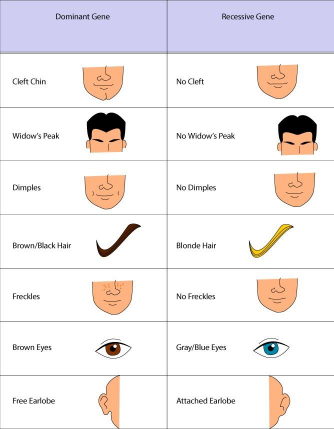

Science 10 Biology Inquiry Project
This inquiry project examines how my own observable genetic traits compare with those of other people in a sample group of 20. The project was selected from the Science 10 biology inquiry list and focuses on inherited traits, dominant and recessive patterns, and data literacy through observation, organization, and graphical representation (Course materials, 2025).
To complete the investigation, I recorded my own visible traits, surveyed 20 participants using the assigned trait inventory, counted the number of yes and no responses for each trait, and compared several frequencies with the approximate values provided in the project handout. This approach supports the inquiry question by combining personal observations with class-style population data and formal comparison (Course materials, n.d.).

In this completed project, I used the survey below to record genetic trait observations for a group of 20 people, organized the counts in a data table, and created a bar graph to show which traits were most common in the group.
| General Instructions |
|---|
| The goal of this project is to familiarize yourself with genetic traits, both your own and those of others. |
| Materials used: the Survey: An Inventory of Genetic Traits; graphing software or graph paper; and recorded responses from 20 participants. |
| Completed work shown here: 1. Survey responses are filled in below. 2. The summary data table, bar graph, frequency comparison table, and conclusion are included. |
| Project focus: compare personal traits with group patterns and with approximate frequencies from the general population. |
What combination of these traits do I have?
Completed survey results:
How many people in the group of 20 had each trait?
The completed data table below shows the number of people who marked “yes” and the number who marked “no” for each trait.
| GENETIC TRAIT | YES | NO |
|---|---|---|
| Detached earlobes | 14 | 6 |
| Tongue rolling | 15 | 5 |
| Dimples | 6 | 14 |
| Right-handed | 18 | 2 |
| Freckles | 3 | 17 |
| Naturally curly hair | 4 | 16 |
| Cleft chin | 5 | 15 |
| Allergies | 7 | 13 |
| Cross left thumb over right - handclasping | 11 | 9 |
| See the colours red and green. | 19 | 1 |
| Have a straight hairline. | 8 | 12 |
The bar graph below shows how many people answered ‘yes’ for each trait and how many answered ‘no’. It includes a legend and labels for both axes, with genetic traits on the x-axis and number of people on the y-axis.
Practice converting fractions into decimals and then decimals into percentages by calculating the frequency of the following traits in the survey.
Filled-in frequencies for the group are shown below and compared with the approximate frequencies for the general population.
| Genetic Trait | Frequency in Your Group | Frequency in the General Population Note: many are approximations |
|---|---|---|
| Tongue rolling | 15/20 = 0.75 = 75% | Can roll tongue – 70% Cannot roll tongue – 30% |
| Handedness | 18/20 = 0.90 = 90% | Right-handed – 93% Left-handed – 7% |
| Hand clasping | 11/20 = 0.55 = 55% | Left thumb on top – 55% Right thumb on top – 44% No preference – 1% |
| Can see Red and Green | 19/20 = 0.95 = 95% | Can see Red and Green – 95.5% Cannot see Red and Green – 4.5% |
| Allergies | 7/20 = 0.35 = 35% | Allergies – 30% No Allergies – 70% |
| Cleft Chin | 5/20 = 0.25 = 25% | Cleft chin – 26% No cleft chin – 74% |
| Detached earlobes | 14/20 = 0.70 = 70% | Detached earlobes – 72% Attached earlobes – 28% |
| Dimples | 6/20 = 0.30 = 30% | Has dimples – 25% Does not have dimples – 75% |
| Freckles | 3/20 = 0.15 = 15% | Has freckles – 5% Does not have freckles – 95% |
| Curly Hair | 4/20 = 0.20 = 20% | Naturally curly hair – 11% Not natural curly hair – 89% |
| Have a straight hairline | 8/20 = 0.40 = 40% | Have a straight hairline – 41% Not have a straight hairline – 59% |
My genetic traits are similar to those of others in some ways and different in others. In my own results, I had detached earlobes, could roll my tongue, was right-handed, had allergies, could see red and green, and had a straight hairline. I did not have dimples, freckles, naturally curly hair, or a cleft chin, and I did not cross my left thumb over my right when clasping my hands. Several of my traits matched the more common traits in the sample, especially right-handedness, tongue rolling, detached earlobes, and red-green colour vision. Other traits I did not have, such as freckles and curly hair, were also uncommon in the survey group.
Overall, the completed survey showed that each person had a different combination of traits, even though some traits appeared much more often than others. By organizing the observations into a summary table, graphing the results, and comparing the group frequencies with approximate population data, I was able to answer the inquiry question with evidence. My traits were partly typical of the group and partly different, which shows that inherited traits vary from person to person.
This project helped me understand that genetics is not only about memorizing terms such as gene, allele, dominant, and recessive. It also involves collecting reliable observations, organizing data carefully, and communicating results clearly. The survey and graph made it easier to see patterns in the sample and to recognize that some traits are much more common than others.
If I repeated this investigation, I would survey a larger and more varied sample group to improve the reliability of the percentages. I would also double-check every response before graphing the data. Overall, this inquiry strengthened my understanding of inherited traits, biological variation, and how evidence can be used to answer a science question in a clear format.
| Criteria | Emerging | Developing | Proficient | Extending |
|---|---|---|---|---|
| Understanding of genetic traits | Shows limited understanding of the traits or their meanings. | Shows partial understanding with some correct explanations. | Shows clear and accurate understanding of the traits and comparison. | Shows deep understanding and explains patterns and limitations in detail. |
| Data collection and accuracy | Data are incomplete, unclear, or contain major errors. | Data are mostly complete but may contain some errors. | Data are complete, organized, and accurate. | Data are exceptionally clear, accurate, and carefully verified. |
| Graph and mathematical comparison | Graph or frequency work is missing or difficult to follow. | Graph and math are present but may have clarity or calculation issues. | Graph and frequency comparisons are accurate, labeled, and support the inquiry well. | Graph and math work are highly polished, precise, and especially effective. |
| Analysis, conclusion, and reflection | Writing is brief or mostly restates the results. | Writing includes some interpretation but lacks depth or detail. | Writing explains results clearly and connects them to the inquiry question. | Writing is thoughtful, well supported, and insightfully discusses patterns and next steps. |
| Presentation does count | Formatting is inconsistent and the project is difficult to follow. | Formatting is adequate but some elements are missing or unclear. | Project is well organized, readable, and professionally presented. | Project is exceptionally polished, coherent, and visually effective. |
| Criteria | Self-Assessment | Evidence |
|---|---|---|
| Understanding of genetic traits | Proficient | I explained how my traits compared with both the sample and the general population values. |
| Data collection and accuracy | Proficient | I included a completed trait survey, a filled data table, and frequency calculations based on 20 participants. |
| Graph and mathematical comparison | Proficient | I created a labeled yes/no bar graph and showed fraction, decimal, and percentage conversions. |
| Analysis, conclusion, and reflection | Proficient | I interpreted the most common and least common traits and reflected on how to improve the investigation. |
| Presentation does count | Proficient | The project includes a title page, headings, organized tables, APA-style references, and consistent formatting. |
Course materials. (2025, July 29). Science 10 inquiry projects [Course project guide].
Course materials. (n.d.). How do my genetic traits compare to those of others? [Project handout].